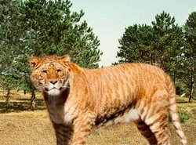

- HOME
- General
- Subdivision
- Looks
- Behaviour
- Senses
- Subspecies:
- Siberian tiger
- Bengal tiger
- Sumatran tiger
- Indochinese tiger
- South China tiger
- Caspian tiger
- Java tiger
- Bali tiger
- Hybrids:
- Liger
- Tigon
- Historisch:
- Saber tooth tiger
- Links


Relevant links:
The liger
Panthera Tigris x Panthera Leo
A hybrid is an animal whose parents are from a different species. Because the parents are from a different species, by definition the cubs will be infertile (in case of the liger, only the males are infertile). This means that a female liger can copulate with a lion or a tiger and the product will be a li-liger or a ti-liger. So the liger as a species cannot reproduce itself (this is one of the biological proof that lions and tigers are a different species).
A liger is, in contrast with a tigon, the cub of a male lion and a female tiger.
Ligers resemble a lion strongly, but have the typical striped fur of a tiger. Ligers love to swim, a thing lions absolutely dislike (a tiger does however).
Lions and tigers live in totally different biotopes; in the wild they will never meet and therefore never copulate.
A liger can grow bigger than both the lion and the tiger, because the gene responsible for growth is 'less present' (meaning the product of these genes generates a larger animal).